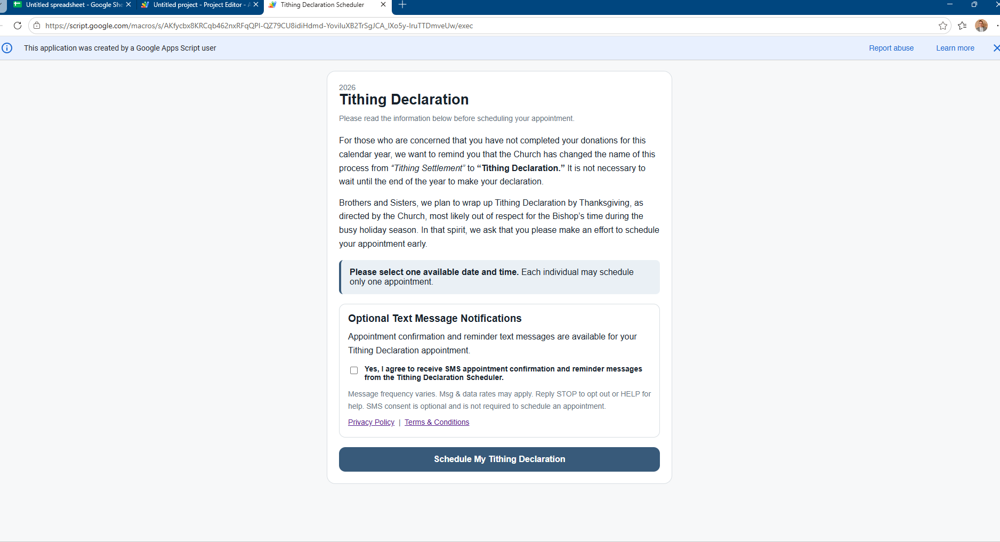

Tithing Declaration Scheduler
Public SMS opt-in and Call-to-Action verification
This page documents the SMS opt-in presented to individuals using the Tithing Declaration Scheduler.
SMS messaging is optional and is not required to schedule an appointment.
SMS opt-in Call-to-Action
How consent is obtained
The SMS checkbox is displayed directly on the first page of the scheduling form. It is unchecked by default. An individual must affirmatively check the box to opt in. The individual may schedule an appointment without consenting to SMS messages.
Screenshot of the live scheduling form
The screenshot below shows the SMS consent disclosure as presented on the public scheduling form.

Live scheduling form
Open the Tithing Declaration Scheduler
This informational page is provided for verification of the scheduler's SMS consent process.